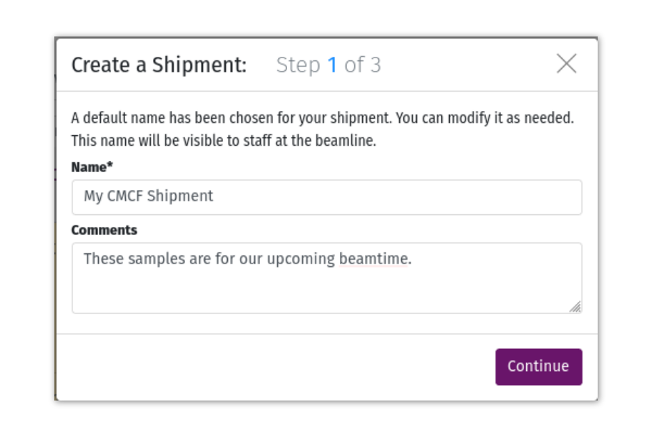
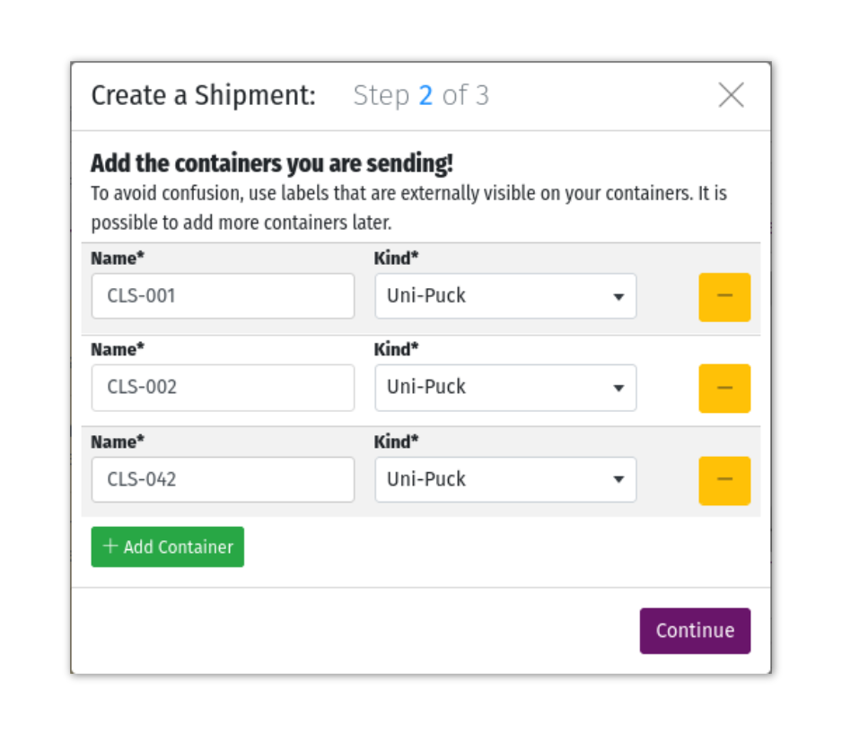
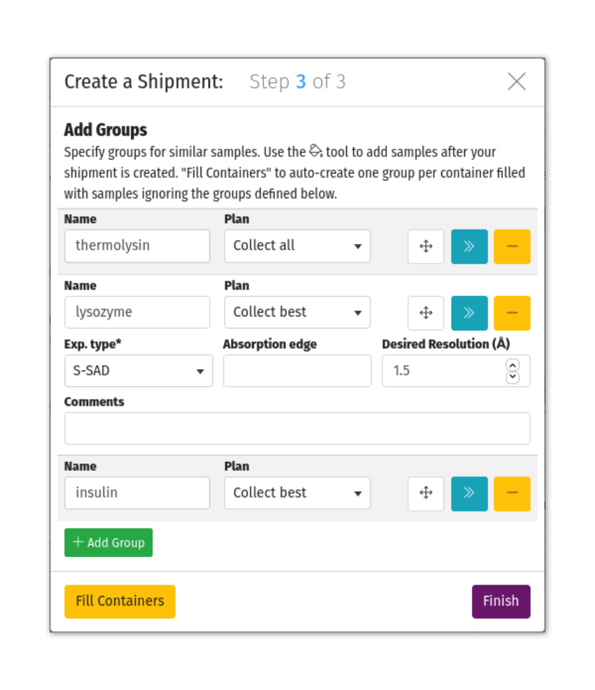
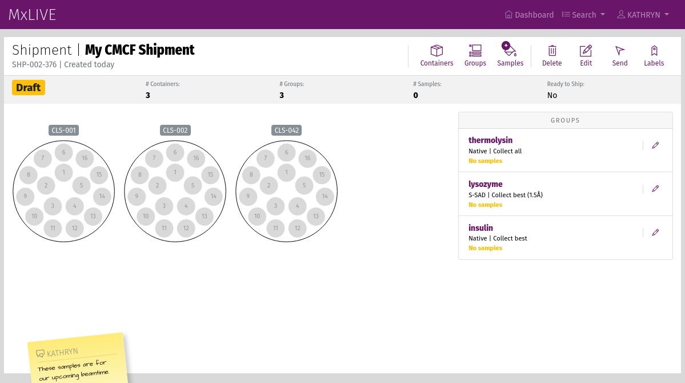
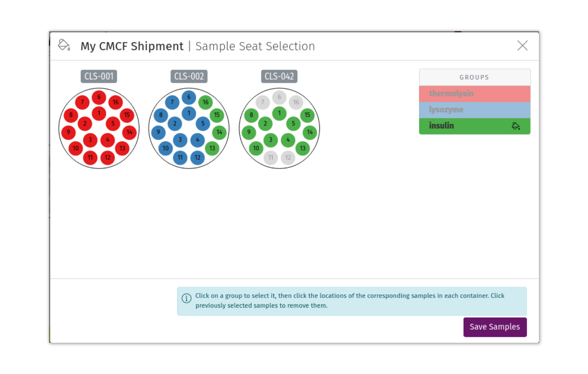
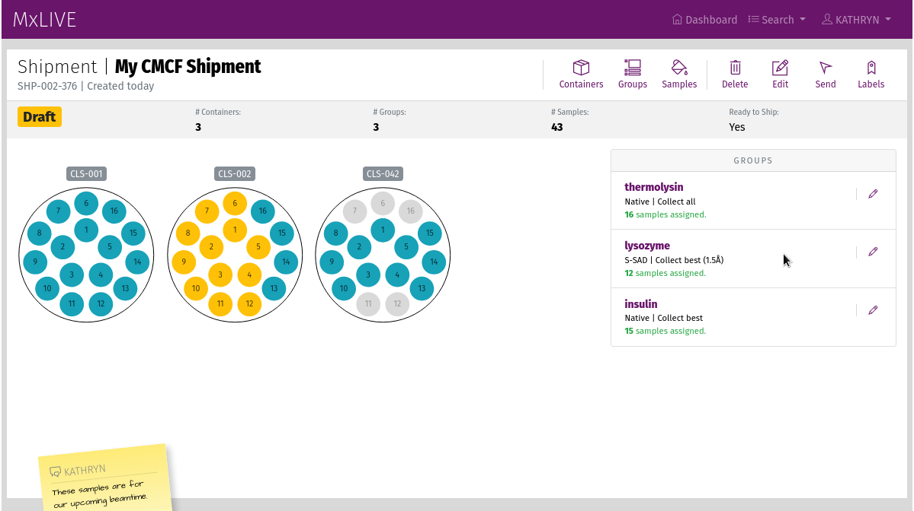
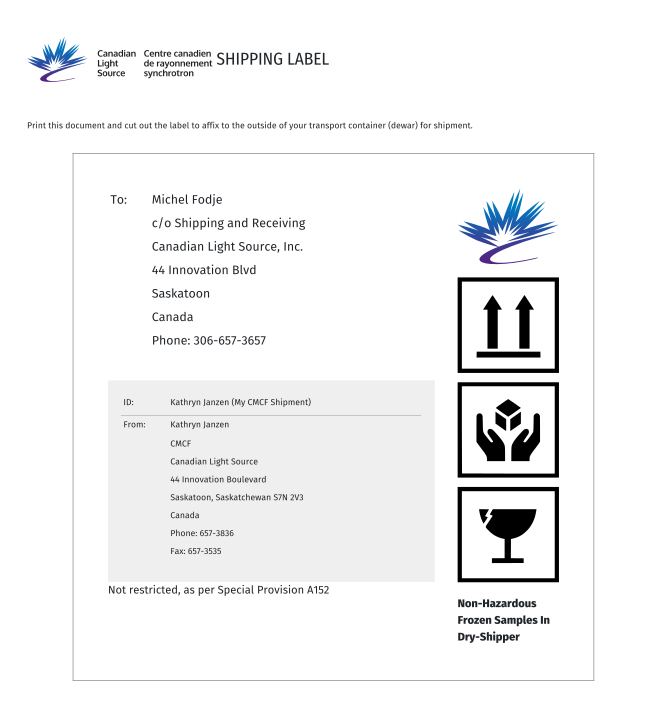
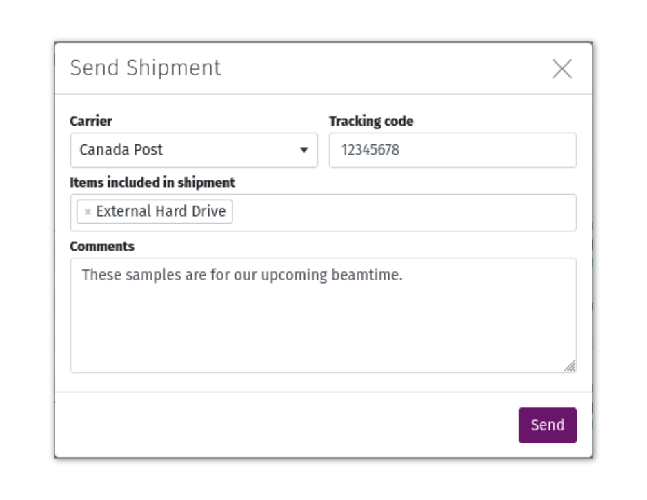
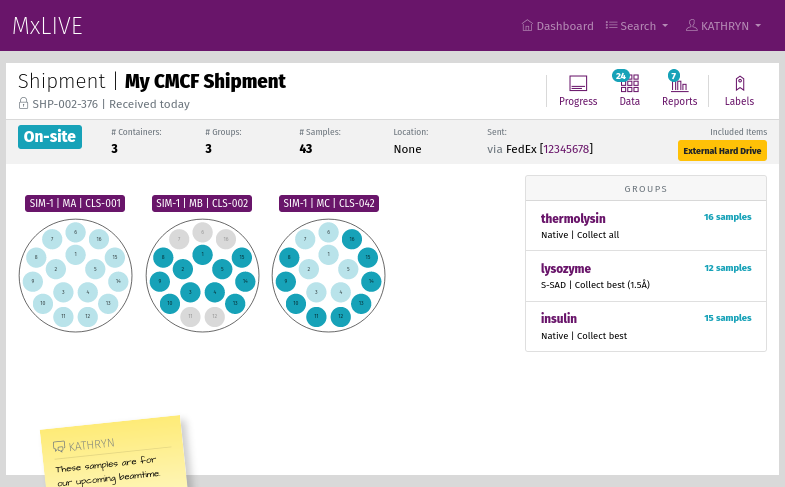
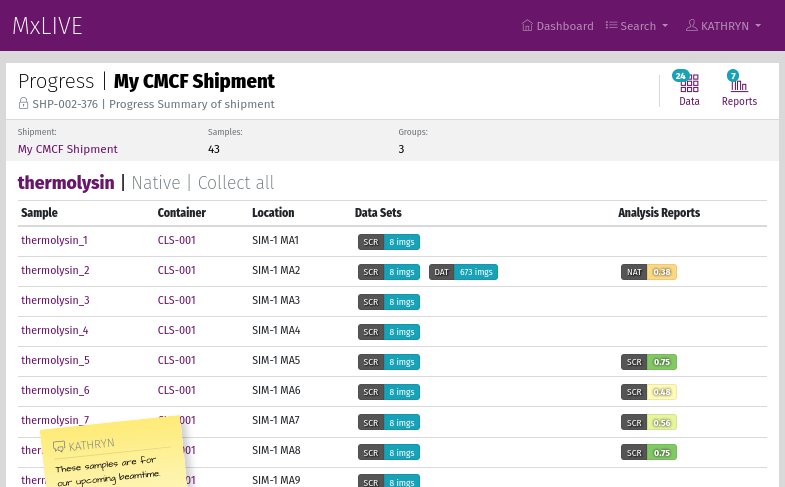

Shipments¶
A shipment is a set of Containers (Uni-pucks, Cassettes, etc) filled with Samples organised into Groups.
Before your beamtime, login to MxLIVE and create a shipment representing the samples you will be sending to the beamline. Some tips for preparing your MxLIVE shipment: - enter the labels on the containers (Uni-Pucks or Cassettes) that you will be sending to the beamline - add samples once your shipment is created; only fill containers with samples that are physically present, - when your samples are shipped, click “Send” in MxLIVE so beamline staff know to expect your shipment.
You can update your shipment’s tracking number even after you have sent it, using the “Recall” button on your sent shipment’s page. If you’ve made a mistake and your shipment hasn’t been received at the beamline yet, you can unsend the shipment, make your changes, and send it again.
As a shipment is created, sent, received on-site, and returned, it moves through the following statuses.
Draft |
Everything is editable. Only accessible from your account. |
Sent |
Not editable, but can be recalled. Has not yet been received by beamline staff. |
On-site |
Received by beamline staff and stored on-site. |
Returned |
Returned by beamline staff according to details in your profile. |
Create a New Shipment¶
A streamlined Shipment Wizard is the main access point for entering information into MxLIVE. The wizard is divided into three steps.
Step 1 of 3: Shipment¶
A default name is chosen for your shipment. You can modify it as needed for your own future reference. This name, along with comments entered here, will be visible to staff at the beamline once your shipment has been sent.
Step 2 of 3: Adding Containers¶
Enter the labels that are externally visible on your containers (Uni-Pucks or Cassettes), and be sure to correctly identify the type of container. These labels will be used by staff to identify your container on the beamline.
To add a new container, click the Add Container button. To remove a container, click the “-” button, and click again to confirm. It is possible to add and remove containers after your shipment has been created.
Step 3 of 3: Adding Groups¶
Specify groups for similar samples. You will assign samples to the groups and containers after your shipment is created. A default Plan and Experiment Type are selected, and can be edited. This information could be used by staff if you are using the Mail-In program, or can be referenced as you are collecting data. To add other optional information, expand group details with the “>>” button.
For Mail-In data collection, your groups will be prioritized from the top of the list to the bottom. To adjust your group’s priority, click the arrow button and drag the group up or down in the list.
To add a new group, click the Add Group button. To remove a group, click the “-” button, and click again to confirm. It is possible to add and remove groups after your shipment has been created.
Warning
The “Fill Containers” button will auto-create one group per container filled with samples, overwriting any groups that you have already defined.
Adding Samples¶
Once you have finished the three steps to create your shipment, it should look something like this:
To add samples, click the Samples icon in the toolbar. Select the group from the right-hand sidebar, and select the locations of samples in that group. Click previously selected samples to remove them. Leave an empty spot in a container location with no sample.
Your shipment, with samples, should look something like this:
Edit a Shipment¶
Changes can be made to your shipment until it is sent. After that, if your shipment has not yet been received at the beamline, you can “Recall” your shipment to Un-send it, make changes, and “Send” it again.
Editing Containers and Groups¶
Click the “Containers” or “Groups” icon in the toolbar to edit your shipment’s containers or groups. You can also edit or delete a specific container or group by clicking on its name to get to its detailed page.
Prioritizing Samples¶
To prioritize samples within a group, go to the group’s detailed page. Samples are prioritized from the top to the bottom of the list of samples. Click the arrow icon in the “Priority” column of the sample table and drag the sample to a higher or lower priority.
Send Your Shipment¶
Warning
Staff do not have access to your shipment until it is sent.
Labels can be printed using the “Labels” icon in the shipment page toolbar. These labels should be printed and affixed to the outside of dewars or other shipping containers.
Click the “Send” button. The Carrier will be defaulted to the one specified in your Profile. Provide a tracking number if you can, so staff can track your shipment as it makes its way to the beamline. Add extra items that you are including with your shipment.
Shipments On-Site¶
While your shipment is on-site, you can monitor your containers’ positions in beamline automounters, and see the progress of datasets and reports related to samples in that shipment. Samples that have at least one dataset collected are represented with a lighter colour than samples that have not been collected yet.
The shipment progress page is formatted in the same way as a session page, but only displays samples that are in the shipment.
Video Tutorials¶
Create a New Shipment¶
Learn how to create a new shipment from scratch.
Add Sample to a Shipment¶
Learn how to add samples, containers, or groups to a shipment that already exists.
Send a Shipment¶
Learn how to send a shipment of containers and groups of samples in MxLIVE.
Add Sample Information from a Spreadsheet¶
Learn how to add or change sample information by copying and pasting from a spreadsheet. You can skip typing each sample name in MxLIVE, even if you have specific naming requirements.